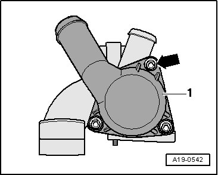
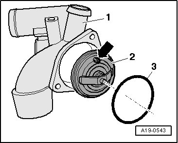

Coolant Thermostat Removal and Installation
Coolant Thermostat
Removing
Note: Drained coolant must be stored in a clean container for disposal or reuse.
- Remove the thermostat housing. Service and Repair

- Remove the bolts -arrows- and remove the adapter -1-.

- Remove the O-ring -3- together with the coolant thermostat -2- from the coolant thermostat housing -1-.
Installing
Installation is carried out in the reverse order while noting the following:
Note: Always replace gaskets and seals.
- Clean the O-ring sealing surfaces.
- Insert the coolant thermostat.
Installed position: Align the breather valve -arrow- as shown in the illustration.
- Coat the new O-ring -3- with coolant.
- Install the adapter to the coolant thermostat housing.
- Install the thermostat housing. Service and Repair